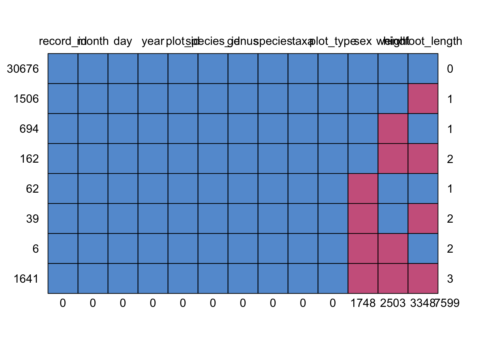

.
Any variable or observation thereof is equally likely to be
missing.
The effect is to reduce the sample size but it does not introduce any
bias.
Here the probability of a value being missing is dependant on this variable or another in the data-set.
In this scenario the proability of a value being missing differs for different values of the same variable and we have no understanding of what is causing this.
We will use the portal data-set as used in the “Introduction to R”
course. Create a new project in Rstudio.
Let’s download the data (ensure that you have a data sub-directory in
your projects working directory):
download.file(url="https://ndownloader.figshare.com/files/2292169",
destfile = "data/portal_data_joined.csv")Install our packages:
Before using a package for the first time you will need to install it on
your machine, and then you should import it in every subsequent R
session when you need it. To install a package in R on your machine you
need to use the install.packages function. To install the
tidyverse package type the following straight into the
console:
#install the tidyverse package
install.packages("tidyverse")It is better to install packages straight from the console then from your script as there’s no need to re-install packages every time you run the script.
Then, to load the package type:
## load the tidyverse package
library(tidyverse)## ── Attaching core tidyverse packages ──────────────────────── tidyverse 2.0.0 ──
## ✔ dplyr 1.1.2 ✔ readr 2.1.4
## ✔ forcats 1.0.0 ✔ stringr 1.5.0
## ✔ ggplot2 3.4.2 ✔ tibble 3.2.1
## ✔ lubridate 1.9.2 ✔ tidyr 1.3.0
## ✔ purrr 1.0.1
## ── Conflicts ────────────────────────────────────────── tidyverse_conflicts() ──
## ✖ dplyr::filter() masks stats::filter()
## ✖ dplyr::lag() masks stats::lag()
## ℹ Use the conflicted package (<http://conflicted.r-lib.org/>) to force all conflicts to become errorsNow let’s load the data into an R tibble using ‘readr’:
surveys <- read_csv("data/portal_data_joined.csv")As a starting point, summary() will list the number of any NAs present in the data-set or in a specific column.
colnames(surveys) # get a list of the variables/columns## [1] "record_id" "month" "day" "year"
## [5] "plot_id" "species_id" "sex" "hindfoot_length"
## [9] "weight" "genus" "species" "taxa"
## [13] "plot_type"summary(surveys$sex) # Note no NAs as sexes are "","M" or "F"## Length Class Mode
## 34786 character charactersummary(surveys$hindfoot_length) # summary stats incl. no. of NAs## Min. 1st Qu. Median Mean 3rd Qu. Max. NA's
## 2.00 21.00 32.00 29.29 36.00 70.00 3348summary(surveys$weight)## Min. 1st Qu. Median Mean 3rd Qu. Max. NA's
## 4.00 20.00 37.00 42.67 48.00 280.00 2503We could try the is.na() to flag the NAs (TRUE).
is.na(surveys$hindfoot_length)That sort of works but the problem is that we are dealing with 1000s
of rows of data.
Maybe we can try which(is.na()) to list out the rows that
contain NAs.
which(is.na(surveys$hindfoot_length))Well that is a bit better but we still have about 3000 rows to
examine/list.
Indeed we can obtain this number (i.e. another way to count NAs like
summary() did.) using sum(is.na()) to find the number of NAs
(Remember TRUE has a value of 1 so we can count by summing the logical
vector).
sum(is.na(surveys$hindfoot_length))## [1] 3348Lets report this for all columns using colSums() to get the number of NAs for each.
colSums(is.na(surveys))## record_id month day year plot_id
## 0 0 0 0 0
## species_id sex hindfoot_length weight genus
## 0 1748 3348 2503 0
## species taxa plot_type
## 0 0 0md_rows <- surveys %>%
filter(!complete.cases(.))
View(md_rows)We can now scroll around the data and see that each of the returned rows have NAs in one or more (likely different) columns. This still isn’t idea as due to the sheer number we have to scroll around quite a bit to get the scale of the problem.
For BIG data-sets we need tools e.g. the mice package (mice: Multivariate Imputation by Chained Equations) .
install.packages("mice")library(mice)##
## Attaching package: 'mice'## The following object is masked from 'package:stats':
##
## filter## The following objects are masked from 'package:base':
##
## cbind, rbindmd.pattern(surveys)
## record_id month day year plot_id species_id genus species taxa plot_type
## 30676 1 1 1 1 1 1 1 1 1 1
## 1506 1 1 1 1 1 1 1 1 1 1
## 694 1 1 1 1 1 1 1 1 1 1
## 162 1 1 1 1 1 1 1 1 1 1
## 62 1 1 1 1 1 1 1 1 1 1
## 39 1 1 1 1 1 1 1 1 1 1
## 6 1 1 1 1 1 1 1 1 1 1
## 1641 1 1 1 1 1 1 1 1 1 1
## 0 0 0 0 0 0 0 0 0 0
## sex weight hindfoot_length
## 30676 1 1 1 0
## 1506 1 1 0 1
## 694 1 0 1 1
## 162 1 0 0 2
## 62 0 1 1 1
## 39 0 1 0 2
## 6 0 0 1 2
## 1641 0 0 0 3
## 1748 2503 3348 7599This gives an idication of how much data is missing and where it is missing.
na.omit() na.exclude() na.rm = TRUE in functions like mean() &
median()
This has the advantage of being simple to do but has an adverse effect
on the power of the model by reducing the sample size.
A special case is pairwise deletion where we analyse all the
cases where data is present. This comes with the downside of having
different sample sizes for the different variables.
One example is a general replacement where all missing
values are replaced with an average value (Mean, median or mode).
This should tend not to distort the rest of the data but does not allow
for the true value at that point and may distort any modelled line. We
also risk introducing bias and whilst the data mean will remain
constant, this approach is likely to reduce the variance.
Similar case imputation happens when there are 2 (or more)
similar sub-populations in the data and we use the average of the
relevant sub-poulation to replace the missing point(s).
### Last known value.
Clip Art attribution:
Deerstalker under Creative Commons licence https://commons.wikimedia.org/wiki/File:Emdw_sh_clip_art.png
Mouse under CC licence
Nature PNGs by
Vecteezy
{kind=link}